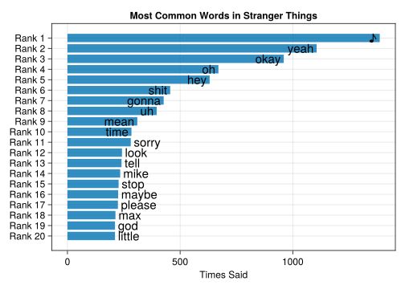

using CSV #for reading CSVs
using DataFrames #dataframe utilities
using Chain #chain macro, similar to R's pipe
using Languages #for stopwords
using CairoMakie #plotting
using Statistics #for median
st_things_dialogue = CSV.read(download("https://raw.githubusercontent.com/rfordatascience/tidytuesday/master/data/2022/2022-10-18/stranger_things_all_dialogue.csv"), DataFrame);In my quest to continue learning how to do things in Julia, I wanted to play around with last week’s #TidyTuesday dataset, which was the dialogue from every episode of Stranger Things. In data-analysis-dabbling in Julia so far, I’ve more or less avoided strings. This has mostly been because I’ve been focusing on numerical topics (like maximum likelihood estimation), but also because working with strings can be a pain. That said, it felt like time to explore strings in Julia, and this dataset provided a good opportunity to practice.
The goal of this analysis is going to be do something fairly straightforward – I’m going to count the most-frequently used words in the series. But this will require learning some fundamental tools like tokenizing, pivoting/reshaping data, and cleaning text data, among others.
As always, the point of this is to work through my own learning process. I’m certainly not claiming to be an expert, and if you are an expert and can recommend better approaches, I’d love to hear them!
So let’s get to it.
Setup and Examine Data
First, let’s load the packages we’ll use and read the data in:
And then we can look at the size of the dataframe:
size(st_things_dialogue)(32519, 8)As well as see the first few rows:
first(st_things_dialogue, 3)3 rows × 8 columns (omitted printing of 1 columns)
| season | episode | line | raw_text | stage_direction | dialogue | start_time | |
|---|---|---|---|---|---|---|---|
| Int64 | Int64 | Int64 | String | String? | String? | Time | |
| 1 | 1 | 1 | 1 | [crickets chirping] | [crickets chirping] | missing | 00:00:07 |
| 2 | 1 | 1 | 2 | [alarm blaring] | [alarm blaring] | missing | 00:00:49 |
| 3 | 1 | 1 | 3 | [panting] | [panting] | missing | 00:00:52 |
So we can see that dialogue might be missing if the line is just stage directions. For our purposes here, let’s just use the lines with dialogue. To do this, we can use the dropmissing() function and then pass in the Dataframe and the column we want to only keep complete cases of, which is :dialogue in this case. Note that Julia uses : to denote symbols.
dialogue_complete = dropmissing(st_things_dialogue, :dialogue)26,435 rows × 8 columns (omitted printing of 4 columns)
| season | episode | line | raw_text | |
|---|---|---|---|---|
| Int64 | Int64 | Int64 | String | |
| 1 | 1 | 1 | 9 | [Mike] Something is coming. Something hungry for blood. |
| 2 | 1 | 1 | 10 | A shadow grows on the wall behind you, swallowing you in darkness. |
| 3 | 1 | 1 | 11 | -It is almost here. -What is it? |
| 4 | 1 | 1 | 12 | What if it's the Demogorgon? |
| 5 | 1 | 1 | 13 | Oh, Jesus, we're so screwed if it's the Demogorgon. |
| 6 | 1 | 1 | 14 | It's not the Demogorgon. |
| 7 | 1 | 1 | 15 | An army of troglodytes charge into the chamber! |
| 8 | 1 | 1 | 16 | -Troglodytes? -Told ya. [chuckling] |
| 9 | 1 | 1 | 17 | -[snorts] -[all chuckling] |
| 10 | 1 | 1 | 18 | [softly] Wait a minute. |
| 11 | 1 | 1 | 19 | Did you hear that? |
| 12 | 1 | 1 | 20 | That... that sound? |
| 13 | 1 | 1 | 21 | Boom... boom... |
| 14 | 1 | 1 | 22 | -[yells] Boom! -[slams table] |
| 15 | 1 | 1 | 23 | That didn't come from the troglodytes. No, that... |
| 16 | 1 | 1 | 24 | That came from something else. |
| 17 | 1 | 1 | 25 | -The Demogorgon! -[all groaning] |
| 18 | 1 | 1 | 26 | -We're in deep shit. -Will, your action! |
| 19 | 1 | 1 | 27 | -I don't know! -Fireball him! |
| 20 | 1 | 1 | 28 | I'd have to roll a 13 or higher! |
| 21 | 1 | 1 | 29 | Too risky. Cast a protection spell. |
| 22 | 1 | 1 | 30 | -Don't be a pussy. Fireball him! -Cast Protection. |
| 23 | 1 | 1 | 31 | The Demogorgon is tired of your silly human bickering! |
| 24 | 1 | 1 | 32 | It stomps towards you. |
| 25 | 1 | 1 | 33 | -Boom! -Fireball him! |
| 26 | 1 | 1 | 34 | -Another stomp, boom! -Cast Protection. |
| 27 | 1 | 1 | 35 | -He roars in anger! -[all clamoring] |
| 28 | 1 | 1 | 36 | -Fireball! -[die clattering] |
| 29 | 1 | 1 | 37 | -Oh, shit! -[Lucas] Where'd it go? |
| 30 | 1 | 1 | 38 | [Lucas] Where is it? [Will] I don't know! |
| ⋮ | ⋮ | ⋮ | ⋮ | ⋮ |
Reshape Data
Cool, so this will get us just rows that actually have dialogue. But what we can see is that each row is a line of dialogue, whereas we actually want to tokenize this so that each row is a word.
To do this, we can use the split function, which lets us split a string at whatever delimiter we provide. In this case, that’s a space. For example:
split("a man a plan a canal panama", " ")7-element Vector{SubString{String}}:
"a"
"man"
"a"
"plan"
"a"
"canal"
"panama"Or, using our actual data:
split(dialogue_complete.dialogue[1], " ")7-element Vector{SubString{String}}:
"Something"
"is"
"coming."
"Something"
"hungry"
"for"
"blood."It’s worth noting that, by default, split() will split on spaces, so we can just call the default function without the final argument as well:
split(dialogue_complete.dialogue[1])7-element Vector{SubString{String}}:
"Something"
"is"
"coming."
"Something"
"hungry"
"for"
"blood."So this gives us the first step of what we want to do in tokenizing the dialogue.
Let’s start putting this into a chain, which is similar to R’s pipe concept. And apparently there are several different chains/pipes in Julia, but the Chain.jl package seems reasonable to me so let’s just use that one.
We can begin a chain operation with the @chain macro, then pass the dataframe name and a begin keyword. We then do all of our operations, then pass the end keyword. Like tidyverse functions in R, most of Julia’s DataFrame functions expect a dataframe as the first argument, which makes them work well with chains.
df_split = @chain dialogue_complete begin
select(
:season,
:episode,
:line,
:dialogue => ByRow(split) => :dialogue_split
)
end26,435 rows × 4 columns
| season | episode | line | dialogue_split | |
|---|---|---|---|---|
| Int64 | Int64 | Int64 | Array… | |
| 1 | 1 | 1 | 9 | ["Something", "is", "coming.", "Something", "hungry", "for", "blood."] |
| 2 | 1 | 1 | 10 | ["A", "shadow", "grows", "on", "the", "wall", "behind", "you,", "swallowing", "you", "in", "darkness."] |
| 3 | 1 | 1 | 11 | ["It", "is", "almost", "here.", "What", "is", "it?"] |
| 4 | 1 | 1 | 12 | ["What", "if", "it's", "the", "Demogorgon?"] |
| 5 | 1 | 1 | 13 | ["Oh,", "Jesus,", "we're", "so", "screwed", "if", "it's", "the", "Demogorgon."] |
| 6 | 1 | 1 | 14 | ["It's", "not", "the", "Demogorgon."] |
| 7 | 1 | 1 | 15 | ["An", "army", "of", "troglodytes", "charge", "into", "the", "chamber!"] |
| 8 | 1 | 1 | 16 | ["Troglodytes?", "Told", "ya."] |
| 9 | 1 | 1 | 17 | [] |
| 10 | 1 | 1 | 18 | ["Wait", "a", "minute."] |
| 11 | 1 | 1 | 19 | ["Did", "you", "hear", "that?"] |
| 12 | 1 | 1 | 20 | ["That...", "that", "sound?"] |
| 13 | 1 | 1 | 21 | ["Boom...", "boom..."] |
| 14 | 1 | 1 | 22 | ["Boom!"] |
| 15 | 1 | 1 | 23 | ["That", "didn't", "come", "from", "the", "troglodytes.", "No,", "that..."] |
| 16 | 1 | 1 | 24 | ["That", "came", "from", "something", "else."] |
| 17 | 1 | 1 | 25 | ["The", "Demogorgon!"] |
| 18 | 1 | 1 | 26 | ["We're", "in", "deep", "shit.", "Will,", "your", "action!"] |
| 19 | 1 | 1 | 27 | ["I", "don't", "know!", "Fireball", "him!"] |
| 20 | 1 | 1 | 28 | ["I'd", "have", "to", "roll", "a", "13", "or", "higher!"] |
| 21 | 1 | 1 | 29 | ["Too", "risky.", "Cast", "a", "protection", "spell."] |
| 22 | 1 | 1 | 30 | ["Don't", "be", "a", "pussy.", "Fireball", "him!", "Cast", "Protection."] |
| 23 | 1 | 1 | 31 | ["The", "Demogorgon", "is", "tired", "of", "your", "silly", "human", "bickering!"] |
| 24 | 1 | 1 | 32 | ["It", "stomps", "towards", "you."] |
| 25 | 1 | 1 | 33 | ["Boom!", "Fireball", "him!"] |
| 26 | 1 | 1 | 34 | ["Another", "stomp,", "boom!", "Cast", "Protection."] |
| 27 | 1 | 1 | 35 | ["He", "roars", "in", "anger!"] |
| 28 | 1 | 1 | 36 | ["Fireball!"] |
| 29 | 1 | 1 | 37 | ["Oh,", "shit!", "Where'd", "it", "go?"] |
| 30 | 1 | 1 | 38 | ["Where", "is", "it?", "I", "don't", "know!"] |
| ⋮ | ⋮ | ⋮ | ⋮ | ⋮ |
Technically we don’t need to chain anything above since we’re just doing one operation (select()) right now, but we’ll add more soon.
One thing you might notice in the final line within select() is Julia’s notation for “doing things” is input_col => function => output_col. In the case above, we’re supplying an anonymous function (which is that x -> fun(x, …)) syntax, and wrapping that in a special ByRow() function that facilitates broadcasting in dataframe operations.
All that said, the above doesn’t quite give us what we want if we look at the first two rows of output:
first(df_split, 2)2 rows × 4 columns
| season | episode | line | dialogue_split | |
|---|---|---|---|---|
| Int64 | Int64 | Int64 | Array… | |
| 1 | 1 | 1 | 9 | ["Something", "is", "coming.", "Something", "hungry", "for", "blood."] |
| 2 | 1 | 1 | 10 | ["A", "shadow", "grows", "on", "the", "wall", "behind", "you,", "swallowing", "you", "in", "darkness."] |
Our dialogue_split column is a vector of vectors. To get around this, we want to flatten the column so that each row contains a single word. The nice thing about our chain operation above is that we can just plunk the flatten() function right on the end to do this:
df_split = @chain dialogue_complete begin
select(
:season,
:episode,
:line,
:dialogue => ByRow(split) => :dialogue_split
)
flatten(:dialogue_split)
end145,243 rows × 4 columns
| season | episode | line | dialogue_split | |
|---|---|---|---|---|
| Int64 | Int64 | Int64 | SubStrin… | |
| 1 | 1 | 1 | 9 | Something |
| 2 | 1 | 1 | 9 | is |
| 3 | 1 | 1 | 9 | coming. |
| 4 | 1 | 1 | 9 | Something |
| 5 | 1 | 1 | 9 | hungry |
| 6 | 1 | 1 | 9 | for |
| 7 | 1 | 1 | 9 | blood. |
| 8 | 1 | 1 | 10 | A |
| 9 | 1 | 1 | 10 | shadow |
| 10 | 1 | 1 | 10 | grows |
| 11 | 1 | 1 | 10 | on |
| 12 | 1 | 1 | 10 | the |
| 13 | 1 | 1 | 10 | wall |
| 14 | 1 | 1 | 10 | behind |
| 15 | 1 | 1 | 10 | you, |
| 16 | 1 | 1 | 10 | swallowing |
| 17 | 1 | 1 | 10 | you |
| 18 | 1 | 1 | 10 | in |
| 19 | 1 | 1 | 10 | darkness. |
| 20 | 1 | 1 | 11 | It |
| 21 | 1 | 1 | 11 | is |
| 22 | 1 | 1 | 11 | almost |
| 23 | 1 | 1 | 11 | here. |
| 24 | 1 | 1 | 11 | What |
| 25 | 1 | 1 | 11 | is |
| 26 | 1 | 1 | 11 | it? |
| 27 | 1 | 1 | 12 | What |
| 28 | 1 | 1 | 12 | if |
| 29 | 1 | 1 | 12 | it's |
| 30 | 1 | 1 | 12 | the |
| ⋮ | ⋮ | ⋮ | ⋮ | ⋮ |
Better! Now let’s check out the first 10 elements of our dialogue split column:
show(first(df_split.:dialogue_split, 10))SubString{String}["Something", "is", "coming.", "Something", "hungry", "for", "blood.", "A", "shadow", "grows"]Clean Text
So, it’s not ideal that we have punctuation in here. We don’t want, for instance “blood” to be considered a different word than “blood.” when we count words later. Same deal for uppercase and lowercase letters – we want “something” to be the same as “Something”. So we need to strip punctuation and lowercase everything.
First, we can write a small little function to strip punctuation.
function strip_punc(x)
strip(x, [',', ';', '.', '?', '!'])
endstrip_punc (generic function with 1 method)And Julia already has a lowercase() function built in. Now, let’s jam these on the end of the chain we already have:
df_split = @chain dialogue_complete begin
select(
:season,
:episode,
:line,
:dialogue => ByRow(split) => :dialogue_split
)
flatten(:dialogue_split)
transform(:dialogue_split => ByRow(lowercase) => :dialogue_split)
transform(:dialogue_split => ByRow(strip_punc) => :dialogue_stripped)
end145,243 rows × 5 columns
| season | episode | line | dialogue_split | dialogue_stripped | |
|---|---|---|---|---|---|
| Int64 | Int64 | Int64 | String | SubStrin… | |
| 1 | 1 | 1 | 9 | something | something |
| 2 | 1 | 1 | 9 | is | is |
| 3 | 1 | 1 | 9 | coming. | coming |
| 4 | 1 | 1 | 9 | something | something |
| 5 | 1 | 1 | 9 | hungry | hungry |
| 6 | 1 | 1 | 9 | for | for |
| 7 | 1 | 1 | 9 | blood. | blood |
| 8 | 1 | 1 | 10 | a | a |
| 9 | 1 | 1 | 10 | shadow | shadow |
| 10 | 1 | 1 | 10 | grows | grows |
| 11 | 1 | 1 | 10 | on | on |
| 12 | 1 | 1 | 10 | the | the |
| 13 | 1 | 1 | 10 | wall | wall |
| 14 | 1 | 1 | 10 | behind | behind |
| 15 | 1 | 1 | 10 | you, | you |
| 16 | 1 | 1 | 10 | swallowing | swallowing |
| 17 | 1 | 1 | 10 | you | you |
| 18 | 1 | 1 | 10 | in | in |
| 19 | 1 | 1 | 10 | darkness. | darkness |
| 20 | 1 | 1 | 11 | it | it |
| 21 | 1 | 1 | 11 | is | is |
| 22 | 1 | 1 | 11 | almost | almost |
| 23 | 1 | 1 | 11 | here. | here |
| 24 | 1 | 1 | 11 | what | what |
| 25 | 1 | 1 | 11 | is | is |
| 26 | 1 | 1 | 11 | it? | it |
| 27 | 1 | 1 | 12 | what | what |
| 28 | 1 | 1 | 12 | if | if |
| 29 | 1 | 1 | 12 | it's | it's |
| 30 | 1 | 1 | 12 | the | the |
| ⋮ | ⋮ | ⋮ | ⋮ | ⋮ | ⋮ |
Confirming that this worked:
show(df_split.:dialogue_stripped[1:10])SubString{String}["something", "is", "coming", "something", "hungry", "for", "blood", "a", "shadow", "grows"]Splendid.
Remove Stop Words
The next step is to get rid of stop words, because we don’t really care about counting those. There’s a list of stopwords in the Languages.jl package that we’ll use
stops = stopwords(Languages.English())488-element Vector{String}:
"a"
"about"
"above"
"across"
"after"
"again"
"against"
"all"
"almost"
"alone"
"along"
"already"
"also"
⋮
"you'd"
"you'll"
"young"
"younger"
"youngest"
"your"
"you're"
"yours"
"yourself"
"yourselves"
"you've"
"z"Swell. Now that we have this, we can subset (filter in R terms) our dataset to include only rows with words not in the list of stop words.
dialogue_no_stops = subset(
df_split,
:dialogue_stripped => x -> .!in.(x, Ref(stops))
)50,812 rows × 5 columns
| season | episode | line | dialogue_split | dialogue_stripped | |
|---|---|---|---|---|---|
| Int64 | Int64 | Int64 | String | SubStrin… | |
| 1 | 1 | 1 | 9 | coming. | coming |
| 2 | 1 | 1 | 9 | hungry | hungry |
| 3 | 1 | 1 | 9 | blood. | blood |
| 4 | 1 | 1 | 10 | shadow | shadow |
| 5 | 1 | 1 | 10 | grows | grows |
| 6 | 1 | 1 | 10 | wall | wall |
| 7 | 1 | 1 | 10 | swallowing | swallowing |
| 8 | 1 | 1 | 10 | darkness. | darkness |
| 9 | 1 | 1 | 12 | demogorgon? | demogorgon |
| 10 | 1 | 1 | 13 | oh, | oh |
| 11 | 1 | 1 | 13 | jesus, | jesus |
| 12 | 1 | 1 | 13 | screwed | screwed |
| 13 | 1 | 1 | 13 | demogorgon. | demogorgon |
| 14 | 1 | 1 | 14 | demogorgon. | demogorgon |
| 15 | 1 | 1 | 15 | army | army |
| 16 | 1 | 1 | 15 | troglodytes | troglodytes |
| 17 | 1 | 1 | 15 | charge | charge |
| 18 | 1 | 1 | 15 | chamber! | chamber |
| 19 | 1 | 1 | 16 | troglodytes? | troglodytes |
| 20 | 1 | 1 | 16 | told | told |
| 21 | 1 | 1 | 16 | ya. | ya |
| 22 | 1 | 1 | 18 | wait | wait |
| 23 | 1 | 1 | 18 | minute. | minute |
| 24 | 1 | 1 | 19 | hear | hear |
| 25 | 1 | 1 | 20 | sound? | sound |
| 26 | 1 | 1 | 21 | boom... | boom |
| 27 | 1 | 1 | 21 | boom... | boom |
| 28 | 1 | 1 | 22 | boom! | boom |
| 29 | 1 | 1 | 23 | troglodytes. | troglodytes |
| 30 | 1 | 1 | 24 | else. | else |
| ⋮ | ⋮ | ⋮ | ⋮ | ⋮ | ⋮ |
If you’re not familiar with Julia, the . is a way to broadcast/vectorize operations, which mostly aren’t vectorized by default. And to be completely honest, I’m not sure why I need to wrap our stopwords in Ref(), but the internet says I do and I assume this is some Julia equivalent of, like, tidyeval that I haven’t gotten around to understanding yet. But regardless, this does what we want!
Getting the Top 20 Words
We’re almost there, fam. We’ve got a dataset in the format we want it in, and we’ve done some light cleaning. Now, let’s count how often each word is used and select the top 20 most common. Again, we’re going to chain some operations together.
top_20 = @chain dialogue_no_stops begin
groupby(:dialogue_stripped)
combine(nrow => :count)
sort(:count, rev = true)
first(20)
end20 rows × 2 columns
| dialogue_stripped | count | |
|---|---|---|
| SubStrin… | Int64 | |
| 1 | ♪ | 1386 |
| 2 | yeah | 1106 |
| 3 | okay | 960 |
| 4 | oh | 670 |
| 5 | hey | 631 |
| 6 | shit | 456 |
| 7 | gonna | 427 |
| 8 | uh | 396 |
| 9 | mean | 310 |
| 10 | time | 284 |
| 11 | sorry | 281 |
| 12 | look | 242 |
| 13 | tell | 240 |
| 14 | mike | 234 |
| 15 | stop | 227 |
| 16 | maybe | 225 |
| 17 | please | 224 |
| 18 | max | 213 |
| 19 | god | 211 |
| 20 | little | 211 |
I’m actually not going to explain the above because I think it’s pretty intuitive if you’ve been following along so far and are familiar with either R or Python functions (the function names here are pretty descriptive, I think).
Plotting
Ok, so, as much as I like Julia so far, plotting does feel difficult. I’ve mostly used Makie and its counterparts, and I think I’m almost starting to get a handle on them, but they definitely don’t feel as intuitive to me as, say, ggplot2.
Full transparency – making this little plot took me more time than I wanted it to, and it’s entirely due to labeling the y-axis ticks. So, uh, here’s the code to make the plot, and just know that I don’t fully understand why some options accept vectors while others want tuples.
lbls = "Rank " .* reverse(string.(1:20))
barplot(
1:nrow(top_20),
reverse(top_20.count),
direction = :x,
bar_labels = reverse(top_20.:dialogue_stripped),
flip_labels_at = median(top_20.count),
axis = (
yticks = (1:20, lbls),
title = "Most Common Words in Stranger Things",
xlabel = "Times Said"
),
)
Et voila – we’ve taken a dataframe with dialogue, tokenized it, cleaned it a little bit, and found the top 20 most common words. We could modify our list of stop words a little if we wanted to get rid of things like “oh”, “okay”, “uh”, and whatnot, but I’m not going to bother with that here. I hope you learned as much from reading this as I did from writing it!
Reuse
Citation
BibTeX citation:
@online{ekholm2022,
author = {Ekholm, Eric},
title = {Stranger {Strings}},
date = {2022-10-26},
url = {https://www.ericekholm.com/posts/stranger-strings},
langid = {en}
}
For attribution, please cite this work as:
Ekholm, Eric. 2022. “Stranger Strings.” October 26, 2022.
https://www.ericekholm.com/posts/stranger-strings.